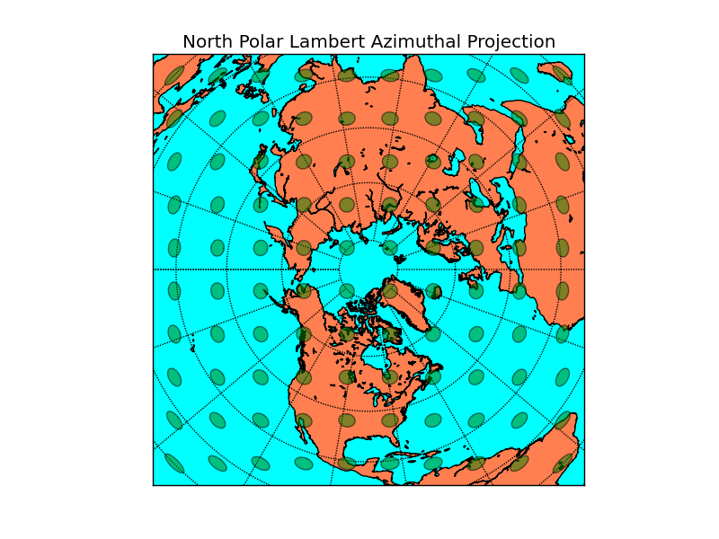
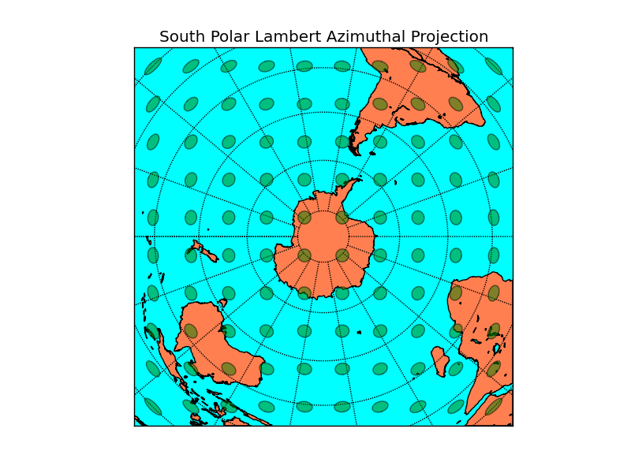

Polar Lambert Azimuthal Projection¶
For convenience, the projections nplaea and splaea are provided
for easy access to the polar aspect of the lambert azimuthal equal-area
projection.
from mpl_toolkits.basemap import Basemap
import numpy as np
import matplotlib.pyplot as plt
from matplotlib.patches import Polygon
# setup north polar lambert azimuthal basemap.
# The longitude lon_0 is at 6-o'clock, and the
# latitude circle boundinglat is tangent to the edge
# of the map at lon_0.
m = Basemap(projection='nplaea',boundinglat=10,lon_0=270,resolution='l')
m.drawcoastlines()
m.fillcontinents(color='coral',lake_color='aqua')
# draw parallels and meridians.
m.drawparallels(np.arange(-80.,81.,20.))
m.drawmeridians(np.arange(-180.,181.,20.))
m.drawmapboundary(fill_color='aqua')
# draw tissot's indicatrix to show distortion.
ax = plt.gca()
for y in np.linspace(m.ymax/20,19*m.ymax/20,10):
for x in np.linspace(m.xmax/20,19*m.xmax/20,10):
lon, lat = m(x,y,inverse=True)
poly = m.tissot(lon,lat,2.5,100,\
facecolor='green',zorder=10,alpha=0.5)
plt.title("North Polar Lambert Azimuthal Projection")
plt.show()

from mpl_toolkits.basemap import Basemap
import numpy as np
import matplotlib.pyplot as plt
# setup south polar lambert azimuthal basemap.
# The longitude lon_0 is at 6-o'clock, and the
# latitude circle boundinglat is tangent to the edge
# of the map at lon_0.
m = Basemap(projection='splaea',boundinglat=-10,lon_0=90,resolution='l')
m.drawcoastlines()
m.fillcontinents(color='coral',lake_color='aqua')
# draw parallels and meridians.
m.drawparallels(np.arange(-80.,81.,20.))
m.drawmeridians(np.arange(-180.,181.,20.))
m.drawmapboundary(fill_color='aqua')
# draw tissot's indicatrix to show distortion.
ax = plt.gca()
for y in np.linspace(19*m.ymin/20,m.ymin/20,10):
for x in np.linspace(19*m.xmin/20,m.xmin/20,10):
lon, lat = m(x,y,inverse=True)
poly = m.tissot(lon,lat,2.5,100,\
facecolor='green',zorder=10,alpha=0.5)
plt.title("South Polar Lambert Azimuthal Projection")
plt.show()
